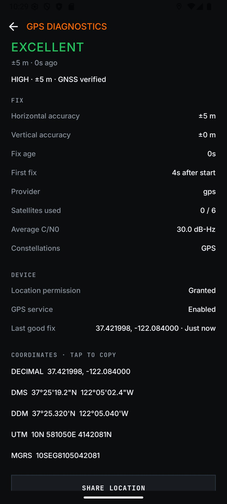
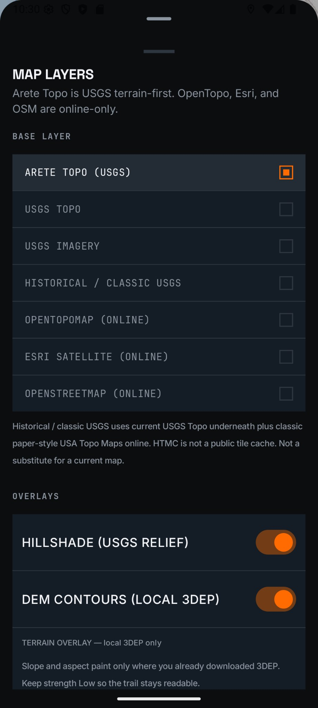
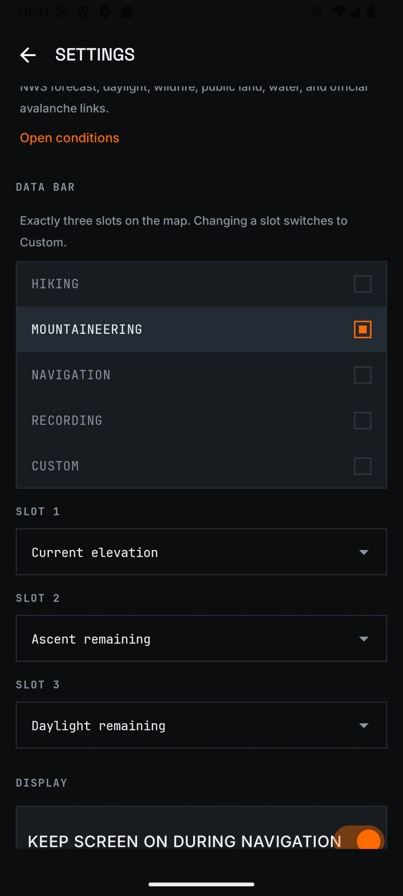
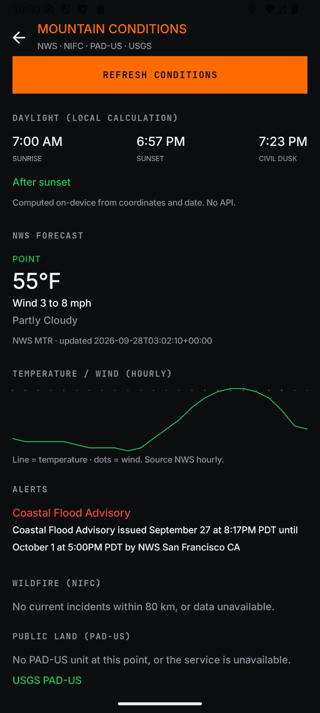
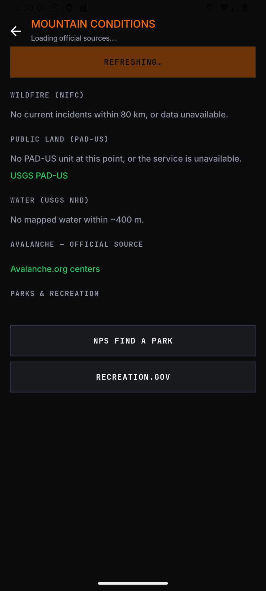
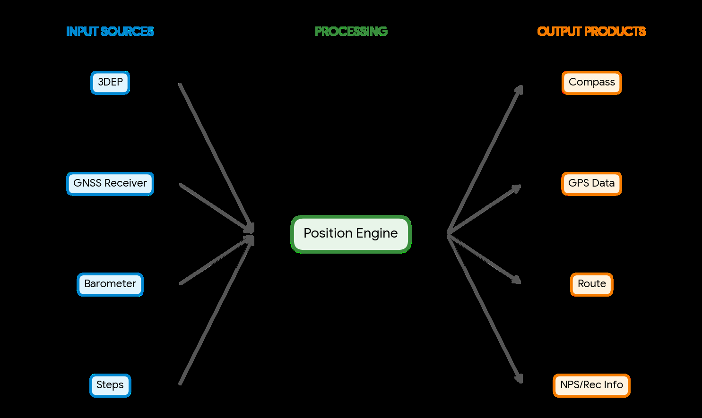
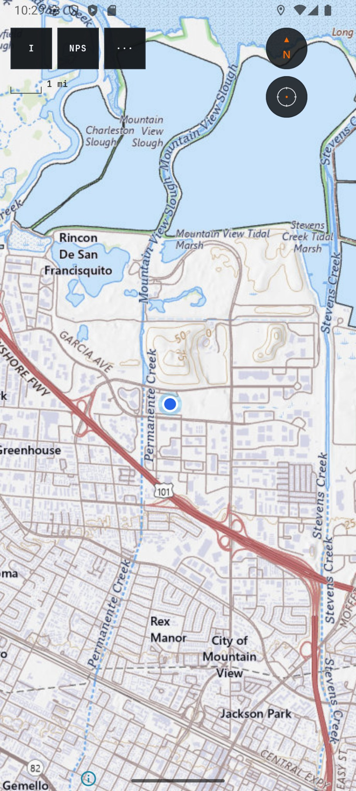
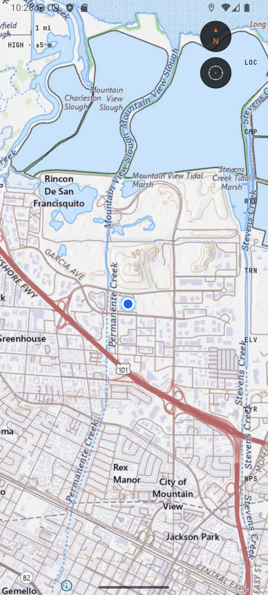
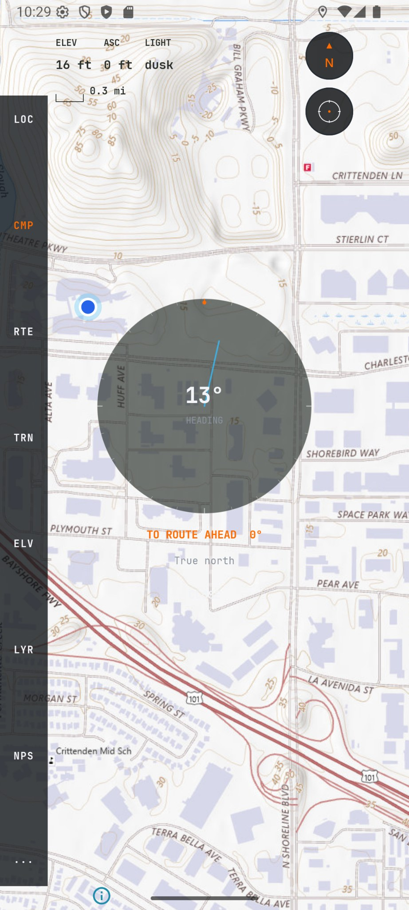

Arête
I’m an avid hiker and love spending my time outdoors. On hikes and mountaineering trips, I found myself increasingly using several apps in tandem: AllTrails, CalTopo, Gaia, and a compass app among a myriad of others. As I used these tools more and more I realized:
- The apps I was using consumed more battery than I was comfortable with
- All the ‘premium’ features on all these apps that I wanted so badly (but didn’t want to pay for) were already open-sourced and free
- I could combine a lot of the apps and tools into one
I set out to create my own Android app that could do it all. I wanted the following functions:
- An accurate topographic map
- Accurate and quick location and heading information
- The ability to import GPX formatted routes from AllTrails or any other source
- A simple but customizable UI
- Weather conditions and alerts
- Download any map area I wanted
- Low power
- No user accounts / syncing / cloud storage
- 100% free
Knowing that I knew nothing about programming an app in Java and Kotlin, I entrusted the programming to my not-so-trustworthy tool, Cursor. The first goal was to be able to use public maps published by OpenStreetMaps (OSM), the USGS, and ESRI satellite imagery. Once I import a trail via the GPX format from AllTrails, I should be able to see it overlaid on the map. As expected, I encountered a handful of problems. The GUI was pretty difficult to use, and the information being displayed on data bars (like speed, elevation, or even the current location) was extremely inaccurate compared to other apps like Gaia or Google Maps. These inaccuracies tended to accumulate after I set up the offline maps, which involved downloading a certain area of my choosing, at a resolution of my choosing. I just couldn’t find out what the problem was - all the other apps on the phone were fed the same information! How could Gaia, using the same GPS receiver on my phone, be so much more accurate?
I decided to push this extremely important issue aside for the time being, to investigate what else worked and what didn’t. And boy, the power saving was great! After using the phone on the same ~6mi loop hike twice (once with Gaia, once with the new app), the new app used less than half the amount of battery that Gaia used, when both were on power-saving mode. The difference was less on regular operation. Expecting much thinner margins between the two apps, I was elated! But the pertinent issue of poor GPS information remained: how could it be that the new app with downloaded map data was so much more inaccurate than another app, like Gaia, without downloaded data?
Turns out, the source of my joy was that of my sorrow. The aggressive power throttling methods that Cursor designed (this one was my fault) was so much so that the GPS data was captured every ~7min and cached rather than constant updates. Back to square one, I thought.
The trade-off between super-accurate GPS and extreme power saving became a decision ‘for later’. ‘For later’ meant whenever I felt like it.
So, I dragged Cursor through redesigning the GUI. I wanted something novel and ergonomic, but my artistic limits showed. Cursor was instructed to design a GUI that saved battery, made the map the central focus of the application, but allowed users to access a myriad of new options, such as:
- Layers (ESRI Satellite Imagery, old and new topo data, USGS satellite imagery, OSM…)
- Accurate location data
- A settings bar with color palettes
- Imported routes
- A recording option to record trips, and save them to .GPX format
- A small compass rose
- A scale for the map
- Elevation info…
The list went on. Through every iteration and idea of the GUI, either 1) The GUI worked, but was incredibly ugly, or 2) The GUI didn’t work but it was beautiful.
I struggled for a while with creating the perfect hiking GUI, but realized I already had the perfect GUI designer: Stitch by Google.
Another AI tool, Stitch by Google specializes in GUI creation for apps, websites, and interfaces. In fact, the portfolio website you’re reading this on was re-designed by Stitch (it used to be so ugly…). The advantage of Stitch was that I could iteratively design the UI, with a “I don’t like this, perhaps this goes here…” or “The color palette doesn’t work so well”. The tool worked great with the extremely indecisive project manager (me) instructing it. Eventually, the indecision led to an idea: what if the app allowed for different UIs? Each user, after all, may prefer a different experience. By catering to a larger user pool, it could mean the application would be that much more successful.
While Stitch re-designed the GUI (a pretty long process), I finally made concrete decisions about the app:
- ‘For later’ had finally arrived, and it was time to tackle the GPS inaccuracy problem
- The app would be redesigned to cater more towards mountaineering
- I would rename the app from what was ‘TrailMap’ (vanilla) to ‘Arête’ (aura).
- I’d add a few features:
- An extremely detailed report on GPS info - how new is it? How many satellites are in play? What kind of accuracy do I have? etc.
- A transparent compass
- A ‘terrain inspect’ option for downloaded maps
- Integration with NPS and Recreation.gov (RIDB) APIs to get campsite, alert, and closure info
- Conditions retrieved from NWS, National Fire Centers, USGS, and Avalanche.org
- Customizable data bar and instrument rail





Problems 2-4 listed above were largely a GUI/API integration issue, and something that Cursor was excellent at. The app was updated with those facilities, and after some iteration passed the usage and offline tests. After some investigation into the source of the GPS data, I found the problem: the moment the native GPS receiver faltered, the app fell back onto the notoriously poor Play Services GPS data. Cursor tried to fix this on its own by implementing a map-embedding system called MapLibre, which had its own conflicting GPS client. The system was also restricted to the smaller GPS satellite ecosystem rather than the now fully publicly-usable GNSS system (which includes China’s BeiDou, Russia’s GLONASS, and EU’s Galileo among others). Finally, there was no verification engine for the GPS - oftentimes, a user would experience a sudden ‘jump’ in elevation or lat/long location. This could be managed with the myriad of other sensors that modern smartphones have.
Along the way I picked up a lesson: coding with Cursor is like coding with the hare in the fable of the Hare and the Tortoise. It seems so fast, until you hit a seemingly impassable block and have to take a nap, during which a more procedural programmer (the tortoise) would easily pass you. Using this lesson I decided to first architect the new “position engine” before building it.
The Position Engine used the phone’s GPS receiver as the ultimate source of truth, and a surrounding suite of sensors as ministers of verification. The first idea was to use dead reckoning with the phone’s clock and step counter for an estimation of where the user should be. So long as the GPS location and dead-reckoning location were close enough, the user would be satisfied. However, this didn’t account for elevation differences. Thankfully, most modern smartphones have a barometer. My idea was to establish a base barometer reading close to the beginning of route navigation, using the GPS’s relative location to the start of the user’s selected GPX route. Since change in elevation is proportional to change in air pressure, altitude could now be verified. 3DEP also provided a slope verification channel.
The now extremely accurate Position Engine was, however, extremely power-hungry. The constant verification was clearly the problem. Instead, I decided to create an intermittent verification program - if the User was abnormally off-route or experienced ‘jumps’ in location (calculated by cached-and-deleted location every 30s), the verification program would go into effect. The Position Engine, being the most authoritative source, was extremely efficient in that it could take the inputs of several sources, compile and comprehend, and pass them to the toolkit of the app quite quickly before becoming dormant. This created an extremely accurate, but power-saving program for location.
The obvious question is, isn’t GPS an excellent and time-tested tool? Why would it ever be wrong frequently enough to have this whole verification system?
The answer lies in geography and the stark truth of mountaineering and similar activities - when in a canyon, near steep mountain faces, or extremely thick tree cover, GPS is known to be inaccurate. The verification system provides a fallback to maintain the user’s location until GPS is available again.
As I finished architecting the Position Engine, Stitch finished creating the GUI. To ensure that the several layouts of GUI could work with the Position Engine, I instructed Cursor to split the program into two distinct parts, with further subdivisions:
- The data collecting and processing engine, with:
- Input sources, which fed into the
- Position Engine, which fed into the
- Output products (Compass, GPS Data, etc.). Having this explicit hierarchy ensured that the output didn’t get ‘double data’ from both input sources and Position Engine. Since I was vibe coding the entire project, I knew that compartmentalization was key.
- The GUI:
- Layer 1, which had the pure information of the output products
- Layer 2, which combined the output products with their UI implementation and
- Layer 3, which were three separate GUIs:
- Rail: A ‘rail’ of the tools on the left hand side of the app
- Spatial: Fully-collapsed menus, underneath which the map was the sole focus
- Edge: Similar to rail, but no visual underlay to options, providing a middle ground between Rail and Spatial

Rail puts a rail of tools on the left, Spatial collapses the menus so the map is the sole focus, and Edge is the middle ground: similar to Rail, but with no visual underlay.




The compartmentalization worked excellently. The final product came together beautifully, but must be tested further in real-world scenarios to find any shortcomings.
You can install Arête from a single Android APK: Install Arête